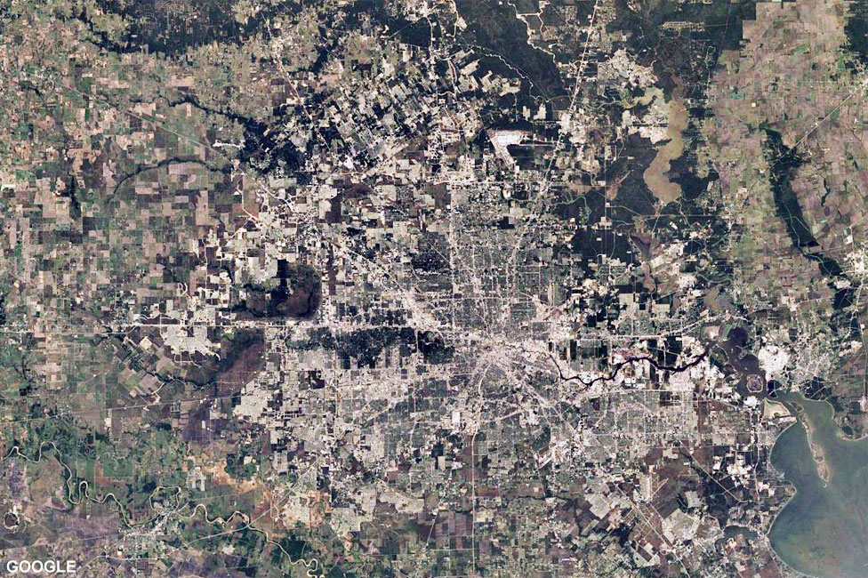
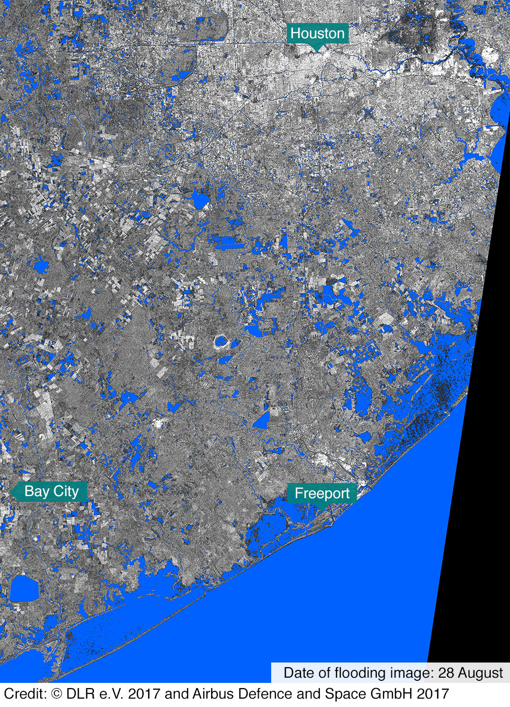
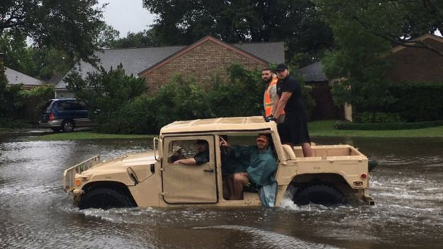
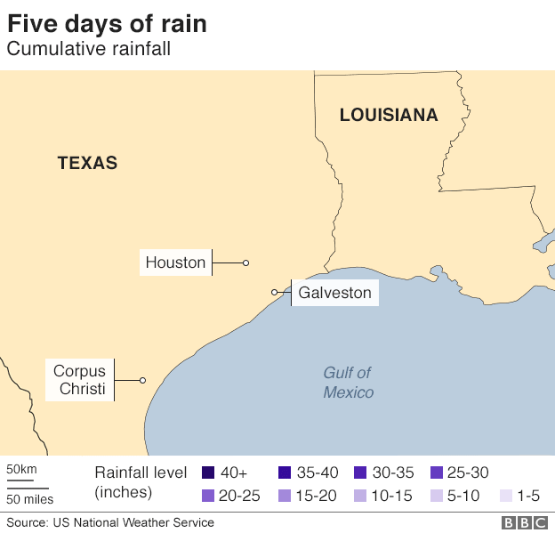
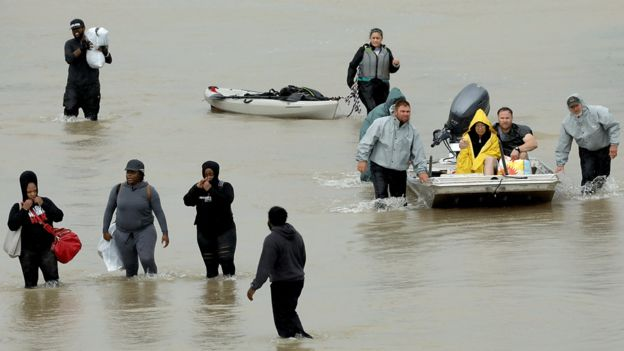
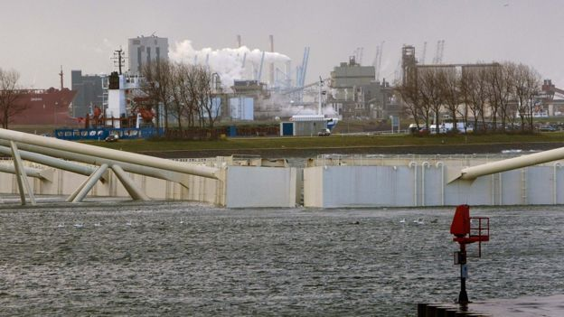

Blog
We keep you connected Globally
August
31
2017

Parts of the Houston region have been hammered by more than 50in of rainfall since Hurricane Harvey made landfall, setting new records for the US. But why has the city become America's flood capital?
In April 2016 "historic" flooding hit Houston, with 17.6in (44.7cm) of rain dumped on the city in a single day.
The flood came only 11 months after another massive storm struck the city, dropping over a foot of rain.
Together, these two events caused 16 deaths and more than $1bn (£777m) in damages.
Both pale in comparison to Hurricane Harvey, the impact of which has secured Houston's unenviable reputation as the US city most severely affected by floods.
Understanding why the risk to life and property is rising is crucial not only to the future of America's fourth-largest city, but to others around the world which share many of its problems.
Urban sprawl
Houston's unbridled, rapid growth is a primary factor.
The population of its metropolitan area is close to 6.8 million people and, with predictions of some of the country's fastest growth for the coming years, it is expected to top 10 million by 2040.
<
Growth itself is not a problem, as it can create economic, social and environmental benefits for cities.
But poorly planned growth which fails to carefully manage land use - for housing, businesses and the infrastructure like roads, parks and sewers that cities need - can create problems and even lead to disasters.
Houston has long favoured light touch controls, which has led to haphazard development.
The city now covers an enormous area of more than 1,500 sq km.
It is the archetype of urban sprawl, where land is made readily accessible for real estate development on the city's ever expanding periphery.
Loss of habitat
This unplanned growth has led to many problems.One is that vast acres of wetlands and prairie land - which soak up large amounts of rainfall - have been paved over.
Between 1992 and 2010, for example, White Oak Bayou in north-west Houston lost about 70% of its original wetlands.
During heavy rain the city's growing expanses of concrete generate runoff that clogs and sometimes overwhelms its complex network of waterways. This includes creeks and bayous, as well as flood controls like levees and detention basins.
Successful wetland and prairie land protection would not itself have a major effect in reducing flooding caused by unprecedented rainfall like that delivered by Harvey.
Yet, protecting and restoring the natural areas provides an important contribution to making Houston less vulnerable to more moderate storms.
They also bring environmental benefits - providing fish and wildlife habitats, and cleaning polluted runoff that can sometimes enter from the city.
The artificially blue-coloured areas show water detected before and after the storm.

A city for cars
Another problem is that investment in flood control infrastructure - things like channels, dams and reservoirs - has failed to keep pace with the expansion of the city.
Houston is a car-oriented city, with multi-billion dollar projects supporting one of the most advanced systems of roads and highways in the world.

The goal is to keep traffic moving.
The mismatch between spending on flood prevention and roads can bring new challenges, as fresh tarmac is laid for motorists.
One example is the partially completed State Highway 99.
Once completed this 290km (180-mile) loop will be the longest in the nation - encircling the Houston area.
Further urban sprawl on the edges of the city will inevitably follow and without careful planning, large new tracts of impervious concrete will be laid.
The runoff generated can cause problems for residents when heavy rains arrive.
For example, since the 1980s, rainfall has increased 26% in the Brays Bayou watershed, but runoff has increased by 204%.
Another study suggests that an additional 3,500 households in the Sims Bayou watershed in the south of the city were exposed to flooding as a result of increased runoff.

What can be done?
The tragedy wrought by Hurricane Harvey offers an opportunity to plan for the rebuilding of a more resilient city.
The expansion of the city has led to short-term financial rewards for developers and builders, while local government has benefitted from an expanded tax base.
But they have not shared the risk presented by flooding - the costs of which are mostly passed on to residents and the national government.

To survive on the Texas Gulf Coast in the coming century, the city and its surrounding region will have to make careful planning decisions to guide growth.
Better co-ordination between federal, state and local government bodies is sorely needed.
The city will also have to consider how it defends itself against storms. Making huge investments in flood control infrastructure will be necessary if they are to keep pace with the rapid expansion of the population.
Around the world
While Harvey offers a dramatic example, devastating storms are becoming more frequent and severe around the world.
Rapid and poorly planned urbanisation, rising sea levels, and subsidence put the world's coastal cities at increased risk of flooding.
One World Bank study forecasts that global flood damage for large coastal cities could cost $1 trillion a year by 2050 unless action is taken.
There are cities that offer a hint of what can be achieved - both in the US and elsewhere.
Faced with more coastal storms and rising sea levels on the Atlantic Coast, Norfolk, Virginia, has adopted long-term strategies for guiding future land use and development.
For example, areas at low risk of flooding where there has so far been limited development will be transformed into high density and mixed income neighbourhoods.
In contrast, high risk areas with established neighbourhoods are to gradually retreat from shorelines, with housing buyouts, while key sewer and water utilities, and roads will be maintained rather than expanded.

Rotterdam, in the Netherlands, provides another model. Ninety percent of the densely populated city lies below sea level.
Its pioneering solutions to flooding entail living with the water, rather than trying to contain it.
It has installed underground garages, green roofs that absorb water and water plazas that serve as a kind of aquatic town square, while simultaneously acting as huge storage reservoirs when extreme rainfall occurs.
From the Norfolk and Rotterdam perspectives, flooding and climate change are not obstacles to economic development, but opportunities.
About this piece
This analysis piece was commissioned by the BBC from an expert working for an outside organisation.
Berke is Professor of Land Use and Environmental Planning at Texas A&MP;M University.
More Stories
September
06
2017
UK firms have been warned about "serious" cyber attacks originating in China that seek to steal trade secrets.
September
04
2017
Are you a coder or white-hat hacker looking to make some money on the side? Bug bounty hunting might be the perfect gig for you.
Recent Posts

Categories
FAQ's
CyberLut is a registered web-design company in Nigeria..It's populary known for it's unique and outstanding professional web-based services.
You should trust CyberLut because we are committed to our works and we are customer minded.
CyberLut offers services to help you create a nice website. All you need is to mail us at CyberLut and we would reply you.
We charge based on the following plans:
- Personal: $25
- Business: $50
- Ultimate: $99